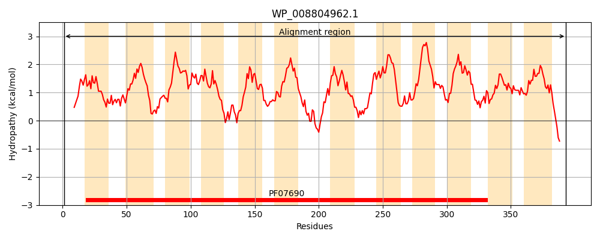
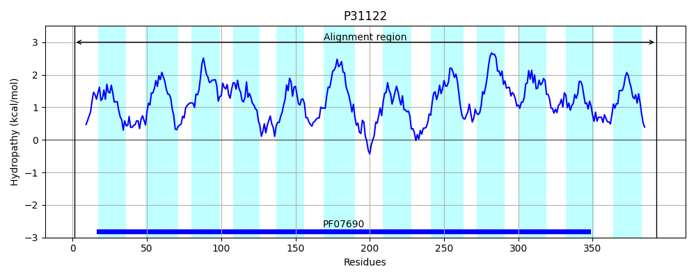
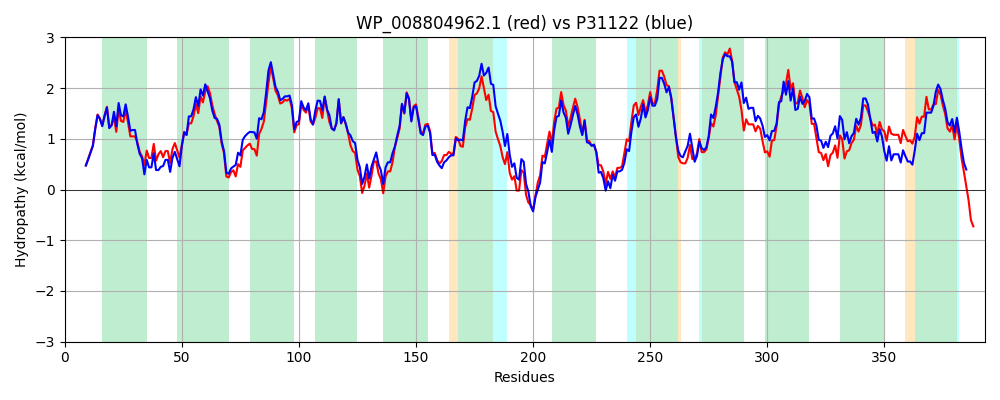

Hit Accession: P31122
Hit TCID: 2.A.1.2.15
Hit Description: gnl|BL_ORD_ID|9749 gnl|TC-DB|P31122|2.A.1.2.15 Hypothetical 42.5 kDa protein IN UXAB-MARR intergenic region - Escherichia coli.
Mach Len: 393
e:0.000000
Query TMS Count : 12
Hit TMS Count: 12
TMS-Overlap Score: 11.750000
Predicted Substrates:CHEBI:5584;hydron, CHEBI:25679;oligosaccharide, CHEBI:10379;beta-D-Gal-(1->3)-beta-D-GlcNAc-(1->3)-beta-D-Gal-(1->4)-D-Glc, CHEBI:22599;arabinose
BLAST Alignment:
Score: 1667 , Bit scores: 646 bits, E-value: 0.0e+00, Alignment length: 393, Percentage identity: 81
Query: 1 MTTNTVSRKVAWLRVVTLAIAAFIFNTTEFAPVGLLSDIAGSFGMETAQVGMMLTIYAWVVALMSLPFMLLTSKMERRRLLIGLFILFIASHVLSFFAWSFDVLVISRIGIAFAHAVFWSITSALAIRMAPPGKRAQALSLIATGTALAMVFGIPIGRIIGQYFGWRMTFLAIGLGALATLACLVKLLPTLPSEHSGSLKSLPVLFRRPALVSVYILTVVVVTAHYTAYSYIEPFVQTVAGLSGNFATVLLLILGGAGIIGSILFGKLGNQHASGLISIAIGLLLACLLLLLPASDNAHHLMLLSIFWGVAIMIIGLGMQVKVLASAPDATDVAMSLFSGIFNIGIGAGALVGSQVSLHLSMASIGYIGAIPALAALVWSLMIFRRWPVSLED 393
MTTNTVSRKVAWLRVVTLA+AAFIFNTTEF PVGLLSDIA SF M+TAQVG+MLTIYAWVVALMSLPFML+TS++ERR+LLI LF++FIASHVLSF +WSF VLVISRIG+AFAHA+FWSIT++LAIRMAP GKRAQALSLIATGTALAMV G+P+GRI+GQYFGWRMTF AIG+GAL TL CL+KLLP LPSEHSGSLKSLP+LFRRPAL+S+Y+LTVVVVTAHYTAYSYIEPFVQ +AG S NFAT LLL+LGGAGIIGS++FGKLGNQ+AS L+S AI LLL CL LLLPA+++ HL +LSIFWG+A+MIIGLGMQVKVLA APDATDVAM+LFSGIFNIGIGAGALVG+QVSLH SM+ IGY+GA+PA AAL+WS++IFRRWPV+LE+
Sbjct: 1 MTTNTVSRKVAWLRVVTLAVAAFIFNTTEFVPVGLLSDIAQSFHMQTAQVGIMLTIYAWVVALMSLPFMLMTSQVERRKLLICLFVVFIASHVLSFLSWSFTVLVISRIGVAFAHAIFWSITASLAIRMAPAGKRAQALSLIATGTALAMVLGLPLGRIVGQYFGWRMTFFAIGIGALITLLCLIKLLPLLPSEHSGSLKSLPLLFRRPALMSIYLLTVVVVTAHYTAYSYIEPFVQNIAGFSANFATALLLLLGGAGIIGSVIFGKLGNQYASALVSTAIALLLVCLALLLPAANSEIHLGVLSIFWGIAMMIIGLGMQVKVLALAPDATDVAMALFSGIFNIGIGAGALVGNQVSLHWSMSMIGYVGAVPAFAALIWSIIIFRRWPVTLEE 393 | Protein Hydropathy Plots: |
|---|
|  |  |
Pairwise Alignment-Hydropathy Plot:
|
|---|
|  |